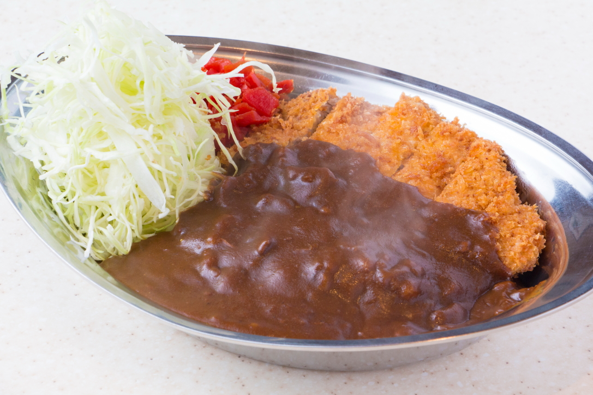
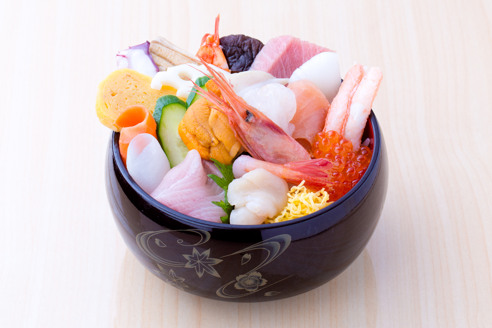
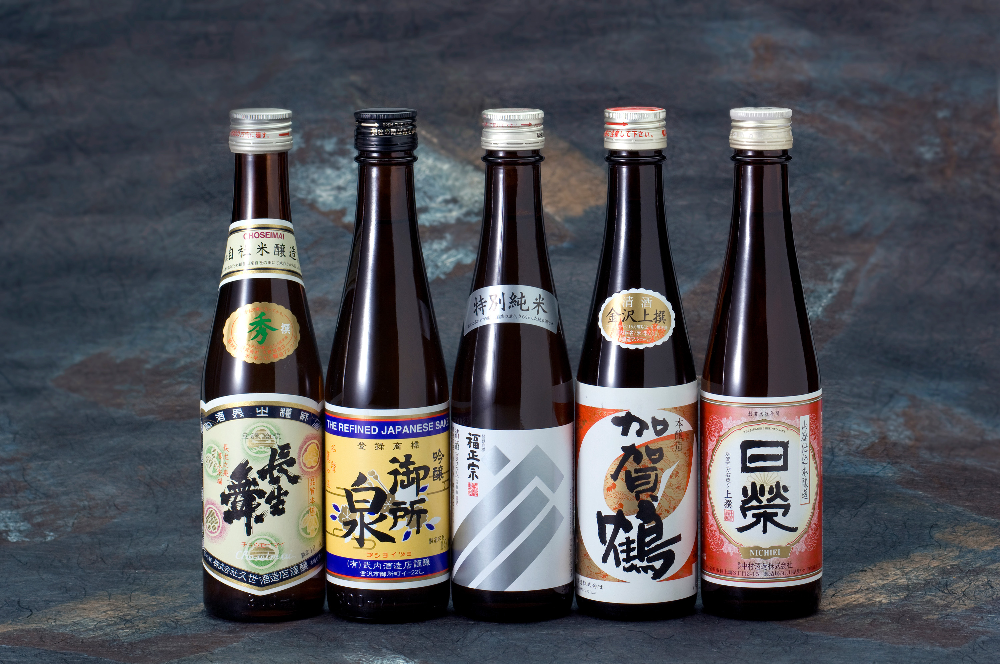

金沢カレー
金沢カレーは、濃厚なルーとキャベツの千切りが特徴のご当地カレーです。特に「ゴーゴーカレー」が有名で、金沢市内に多くの店舗があります。
住所、お問い合わせ
住所: 〒920-0858 石川県金沢市木ノ新保町1-1 ゴーゴーカレー金沢駅総本山店 電話番号: 076-256-1555 アクセス: JR金沢駅から徒歩すぐ 営業時間: 10時00分～22時00分

海鮮丼
新鮮な魚介類をふんだんに使った海鮮丼は、金沢の名物料理の一つです。市場や食堂で新鮮なネタを楽しむことができます。
住所、お問い合わせ
住所: 〒920-0858 石川県金沢市木ノ新保町1-1 百番街 Rinto 魚がし食堂 金沢駅 Rinto店 電話番号: 076-254-5278 アクセス: JR金沢駅から徒歩すぐ 営業時間: 11時00分～15時00分,16時30分～21時00分
金沢おでん
金沢おでんは、地元の食材を使った優しい味わいのおでんです。特に「黒いおでん」として知られ、独特の出汁が特徴です。
住所、お問い合わせ
〒920-0905 石川県金沢市上近江町50番地 金沢おでん いっぷくや 076-223-3789 アクセス: JR金沢駅からバスで約10分 営業時間: 9時00分～17時00分

金沢の地酒
金沢は多くの酒蔵があり、地元の米と水を使った美味しい地酒が楽しめます。特に「福政宗」や「日榮」などが有名です。
住所、お問い合わせ
住所: 〒920-0935 石川県金沢市石引2丁目8-3 福光屋 電話番号: 076-223-1117 アクセス: JR金沢駅からバスで約30分 営業時間: 10時00分～18時00分